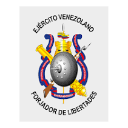

11 BRIGADA BLINDADA
Joven venezolano, si tu edad está comprendida entre 18 y 30 años, estás en edad militar. Sé listo, alistate.
La 11 Brigada Blindada “General de Brigada Pedro José Ruiz Rondón” es una unidad militar superior del Ejército Bolivariano de Venezuela ubicada en Fuerte Mara, estado Zulia.
Dirección: Sede: Fuerte Mara, municipio Mara, estado Zulia.